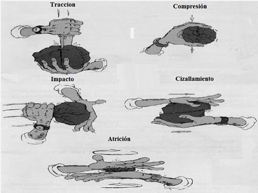
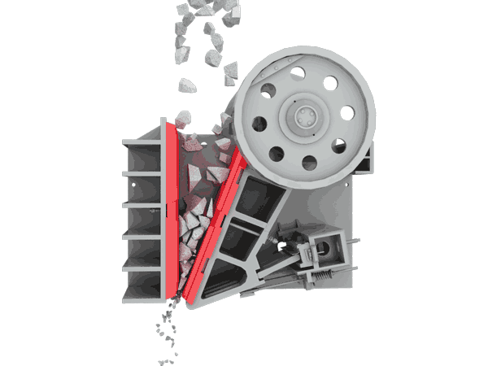
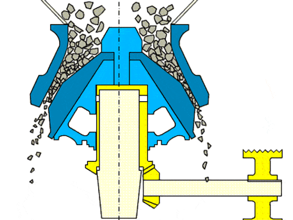
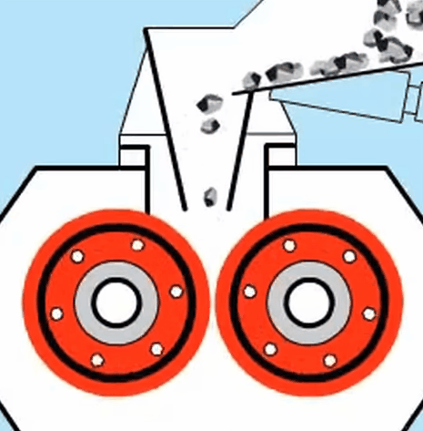
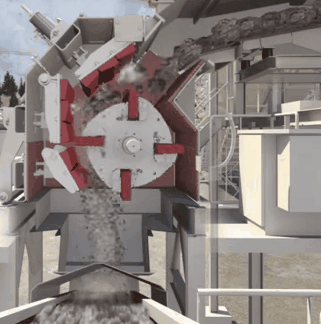
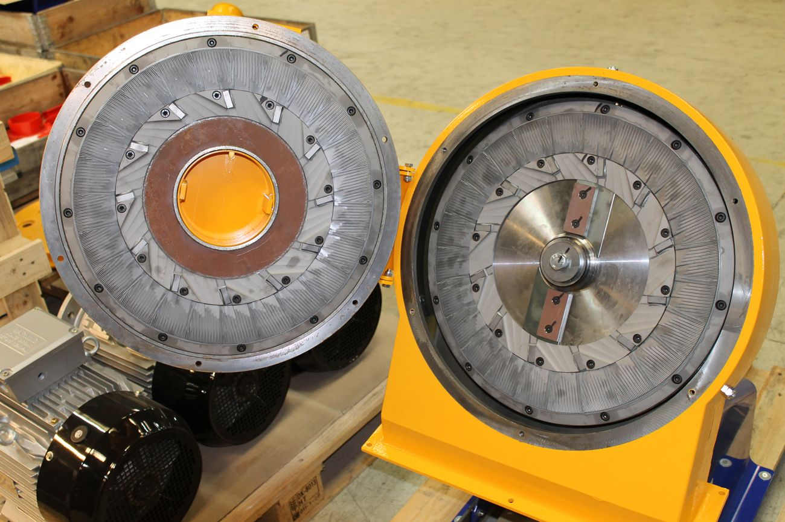
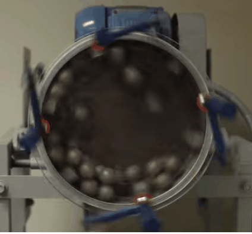

Reducción de tamaño
Conminución, mecanismos de fractura, equipos y leyes energéticas — por qué triturar es una de las operaciones más comunes de la industria y, paradójicamente, una de las menos eficientes.
La reducción de tamaño —o, en lenguaje técnico, conminución— es el conjunto de operaciones que transforman bloques grandes de sólido en partículas controladas. Es una de las operaciones mecánicas más extendidas de la industria y, a la vez, una de las menos eficientes en términos energéticos: en una planta minera típica concentra entre el 30% y el 60% del consumo eléctrico total. Esta lectura recorre por qué se rompe, cómo se rompe, con qué se rompe y cuánto cuesta romper.
En esta lectura

Si su proyecto involucra reducir el tamaño de un material, deberá investigar sus propiedades, justificar la elección del equipo y, en lo posible, estimar la energía requerida con alguna de las leyes de conminución. La ley de Bond es la más recomendada para estimaciones preliminares siempre que pueda obtenerse o asumirse un valor del índice de trabajo $W_i$.
1. ¿Por qué rompemos las cosas?
La reducción de tamaño es una operación unitaria con un objetivo aparentemente trivial: convertir un sólido grande en sólidos más pequeños. La aparente trivialidad se desvanece apenas se pregunta para qué. La industria no muele por gusto; muele porque varios procesos posteriores no son viables sin esa transformación previa.
El primer objetivo, y el más profundo, es aumentar el área superficial disponible. Toda reacción heterogénea entre un sólido y un fluido —una lixiviación de mineral, una hidrogenación catalítica, una disolución farmacéutica, una combustión de carbón pulverizado— ocurre en la interfase. La velocidad del proceso depende, antes que de cualquier otra cosa, de cuánta interfase está disponible. Para una partícula esférica, el área específica por unidad de volumen escala como $a_v \propto 1/D$, de manera que reducir el diámetro de 50 mm a 100 µm —un factor de 500 en tamaño lineal— multiplica la superficie disponible por un factor del orden de 500 veces. Sin esa amplificación, la cinética de la mayoría de los procesos hidrometalúrgicos y catalíticos sería prohibitivamente lenta.
El segundo objetivo es obtener un tamaño de partícula específico. Muchos productos finales o intermedios requieren un tamaño definido para cumplir con la especificación comercial, con un requisito de calidad o con la entrada de la siguiente etapa de proceso. El cemento Portland necesita una finura precisa para hidratarse correctamente; los pigmentos exigen un tamaño definido para dar el color y el poder cubriente esperados; las harinas industriales se cotizan por su distribución granulométrica; los activos farmacéuticos se muelen para garantizar biodisponibilidad. En todos estos casos, el tamaño no es un subproducto del proceso: es el producto.
El tercer objetivo —central en minería— es liberar componentes valiosos. La roca extraída contiene el mineral de interés disperso en una matriz estéril llamada ganga; mientras los dos permanezcan físicamente entrelazados, ninguna operación de concentración (flotación, separación magnética, gravimétrica) puede separarlos. La molienda quiebra esa unión hasta que las partículas de mineral quedan mayoritariamente sueltas. El tamaño al que esto ocurre se llama tamaño de liberación y es propio de cada yacimiento.
A esto se suman dos objetivos más, menos espectaculares pero igualmente reales. El primero es facilitar el manejo y transporte: las partículas pequeñas y uniformes se transportan neumáticamente, se dosifican con tornillo, se mezclan sin segregación. El segundo es mejorar propiedades del producto que dependen del tamaño: la textura en alimentos, la capacidad de compactación en tabletas farmacéuticas, la velocidad de combustión en un carbón pulverizado.
La reducción de tamaño raramente produce partículas de un solo tamaño. El producto es siempre una distribución que debe caracterizarse —por tamizado, análisis de imagen o difracción láser— para saber si cumple la especificación. Pensar en términos de un único «tamaño de producto» es una simplificación útil para el diseño preliminar, pero la realidad granulométrica es siempre estadística.
“La conminución es la operación más costosa de una planta concentradora, y la más difícil de optimizar: el grueso de la energía se disipa como calor y la fracción útil —la que efectivamente crea superficie— rara vez supera el 2%.
Wills & Finch, Mineral Processing Technology
2. Mecanismos de fractura
Para reducir el tamaño de un sólido es preciso aplicarle un esfuerzo que supere su resistencia a la fractura. Toda la diversidad del catálogo industrial de equipos —cientos de modelos, decenas de fabricantes, varias generaciones tecnológicas— se reduce, en el fondo, a cuatro mecanismos elementales: compresión, impacto, atrición y corte. Cada uno se acomoda a un tipo distinto de material y a un rango distinto de tamaños. Ningún equipo industrial actúa por un solo mecanismo —casi siempre hay combinación—, pero entender los cuatro por separado es la base para reconocer cuál predomina en cada máquina y por qué.
- Equipos: trituradoras de mandíbula (jaw), giratorias (gyratory), de rodillos.
- Material ideal: rocas duras, frágiles y no demasiado abrasivas —caliza, cuarzo, mineral de hierro.
- Ejemplos industriales: minería primaria, canteras, cemento (primera etapa), reciclaje de concreto.
- Relación de reducción típica: 3:1 a 8:1 por etapa.
- Equipos: molinos de martillos, molinos de impacto, pulverizadores.
- Material ideal: frágiles y de dureza media —carbón, fosfatos, piedra caliza, granos secos.
- Ejemplos industriales: molienda de carbón en plantas térmicas, harina industrial, fertilizantes.
- Relación de reducción típica: 10:1 a 40:1.
- Equipos: molinos de discos (atrición), molinos de bolas, molinos de barras, molinos coloidales.
- Material ideal: amplio —desde duros hasta semiduros—: cementos, pigmentos, minerales metálicos.
- Ejemplos industriales: molienda de clínker a cemento, beneficio de minerales, activos farmacéuticos.
- Relación de reducción típica: 20:1 a 100:1 (molinos de bolas largos).
- Equipos: cortadoras rotativas (knife mills), granuladores, picadoras.
- Material ideal: blandos, elásticos, fibrosos o tenaces —plásticos, caucho, papel, textiles, biomasa.
- Ejemplos industriales: reciclaje de plásticos, alimentos (carnes, vegetales), preparación de pulpa.
- Relación de reducción típica: 5:1 a 20:1, según el tamaño de la malla.
En la mayoría de los equipos industriales los cuatro mecanismos actúan en combinación, aunque uno suele predominar según el diseño y las propiedades del material. Un molino de martillos rompe por impacto pero también por atrición contra la rejilla; un molino de bolas combina impacto (cuando las bolas caen) con cizalla (cuando ruedan unas sobre otras). Etiquetar un equipo por su mecanismo dominante es una simplificación útil; no es una caracterización exhaustiva.
En minería no se muele hasta un tamaño arbitrario sino hasta el tamaño de liberación, aquel al que las partículas de mineral valioso quedan mayoritariamente separadas de la ganga. Moler más fino que ese tamaño desperdicia energía sin aportar beneficio metalúrgico y, peor, incrementa la generación de slimes —ultrafinos difíciles de recuperar por flotación—. La decisión de hasta dónde moler es, por eso, una de las más importantes del diseño económico de una planta concentradora.
3. Equipos de reducción de tamaño
La elección del equipo adecuado depende de varios factores simultáneos: tipo y dureza del material, tamaño de alimentación y de producto deseado, capacidad de proceso, humedad, sensibilidad al calor. Una forma operativa de organizar el catálogo es por el tamaño de producto que cada equipo es capaz de entregar. Aparecen así tres familias: las trituradoras para reducción gruesa, los molinos para reducción intermedia y fina, y los ultrafinos y cortadoras para casos especiales —producto micrónico, materiales sensibles al calor, sólidos fibrosos o plásticos.
3.1 · Trituradoras (reducción gruesa)
La trituración primaria es la primera etapa del proceso: recibe el material directamente de la mina o del recibo de planta, en trozos de hasta más de un metro, y lo lleva a un tamaño manejable para las etapas siguientes. El mecanismo dominante es la compresión, lenta y robusta, sobre rocas duras.

- Mecanismo
- Compresión.
- Aplicaciones
- Trituración primaria en minería, canteras, escorias, reciclaje de concreto.
- Material ideal
- Rocas duras y abrasivas; bloques grandes (hasta 1.5 m).
- Relación de reducción
- 3:1 a 7:1.

- Mecanismo
- Compresión continua.
- Aplicaciones
- Minería primaria de muy alta capacidad; operación continua sin tiempos muertos.
- Material ideal
- Rocas muy duras y masivas: cobre, hierro, oro primario.
- Relación de reducción
- Hasta 8:1.

- Mecanismo
- Compresión (y algo de cizalla si los rodillos son dentados).
- Aplicaciones
- Carbón, yeso, arcilla, sal, roca fosfórica; alimentación a molinos.
- Material ideal
- Dureza media-baja, no muy abrasivos.
- Relación de reducción
- 2:1 a 4:1.
3.2 · Molinos (reducción intermedia y fina)
El término molino agrupa los equipos que llevan el producto desde el rango de centímetros y milímetros hacia las decenas o centenas de micrómetros. Aquí dominan los mecanismos de impacto y atrición, y aquí está concentrado el grueso del consumo eléctrico de cualquier planta de conminución industrial.

- Mecanismo
- Impacto (principal) y atrición.
- Aplicaciones
- Carbón, piedra caliza, fosfatos, alimentos secos, biomasa, madera.
- Material ideal
- Frágiles, fibrosos, dureza baja a media.
- Relación de reducción
- 10:1 a 40:1.

- Mecanismo
- Atrición (cizalla entre superficies).
- Aplicaciones
- Granos, especias, pigmentos, pulpa de papel.
- Material ideal
- Blandos a semiduros; tolera algo de humedad.
- Relación de reducción
- 5:1 a 10:1.

- Mecanismo
- Impacto y atrición.
- Aplicaciones
- Molienda fina de minerales, cemento, cerámica, pigmentos; workhorse de la minería.
- Material ideal
- Duros y abrasivos; apto para operación húmeda o seca.
- Relación de reducción
- 20:1 a 100:1 (configurables en circuito cerrado).
3.3 · Ultrafinos y cortadoras
El tercer grupo agrupa equipos especializados: por un lado, los jet mills que llevan el producto al rango submicrónico sin contaminación metálica ni calentamiento apreciable; por otro, las cortadoras que trabajan por corte sobre materiales blandos, elásticos o fibrosos donde la fractura frágil simplemente no funciona.
- Mecanismo
- Impacto partícula-partícula.
- Aplicaciones
- Productos farmacéuticos, pigmentos, cerámicas finas, tóneres, cosméticos.
- Material ideal
- Sensibles al calor (el gas enfría), alta pureza.
- Relación de reducción
- Producto submicrónico ($d_{50} < 10$ µm).
- Mecanismo
- Corte.
- Aplicaciones
- Reciclaje de plásticos, caucho, textiles; alimentos (carnes, vegetales).
- Material ideal
- Blandos, elásticos, fibrosos, tenaces.
- Relación de reducción
- 5:1 a 20:1, según la malla.
3.4 · Tabla resumen de relación de reducción por equipo
Tabla 1. Rangos típicos de relación de reducción y tamaño de producto por tipo de equipo. Sirve para acotar qué equipos considerar a partir del salto $F/P$ que el proyecto necesita resolver.
| Equipo | Relación de reducción | Tamaño de producto | Notas |
|---|---|---|---|
| Trituradora de mandíbula | 3:1 – 7:1 | 50 – 300 mm | Primaria. |
| Trituradora giratoria | 4:1 – 8:1 | 25 – 200 mm | Primaria de alta capacidad. |
| Rodillos lisos | 2:1 – 4:1 | 5 – 50 mm | Secundaria suave. |
| Molino de martillos | 10:1 – 40:1 | 0.5 – 25 mm | Frágiles y fibrosos. |
| Molino de bolas | 20:1 – 100:1 | 10 – 200 µm | Workhorse industrial. |
| Molino de barras | 15:1 – 50:1 | 0.3 – 2 mm | Menos finos que bolas. |
| Jet mill | n/a | < 10 µm | Submicrónico, sin contaminación. |
| Knife mill | 5:1 – 20:1 | 1 – 20 mm | Fibrosos, plásticos. |
Ningún equipo lleva un bloque de un metro directamente a cien micras: relaciones de reducción del orden de $10^4{:}1$ son inalcanzables en una sola máquina. Por eso las plantas industriales se diseñan en cascada: trituración primaria, luego secundaria, luego molienda gruesa con barras, después molienda fina con bolas y, eventualmente, una etapa ultrafina con jet mill o molino agitado. Cada etapa aplica una relación de reducción que cae en su rango óptimo.
4. Eficiencia energética y leyes de la conminución
La reducción de tamaño es una operación con eficiencia energética sorprendentemente baja: en la práctica industrial, la fracción de energía que efectivamente se invierte en crear nueva superficie —el producto $\gamma \cdot \Delta A$ entre la energía superficial específica del material y el incremento de área— es inferior al 2%. El resto se disipa como calor, vibración y deformación elástica del sólido y del equipo. Esa ineficiencia explica por qué la conminución concentra el mayor consumo eléctrico de las plantas que dependen de ella. También explica por qué, durante más de un siglo, varios autores han intentado fórmulas que predigan razonablemente la energía requerida para una molienda dada.
Tres leyes empíricas clásicas dominan el campo, junto con una formulación generalizada posterior que las reconcilia. Las tres clásicas se proponen como casos particulares de una misma idea: la energía es proporcional a una potencia del tamaño. La diferencia entre ellas está en el exponente y en el rango donde funcionan razonablemente.
4.1 · La ley de Rittinger (1867): la energía como nueva superficie
Rittinger postuló que la energía requerida es proporcional a la nueva área superficial creada durante la molienda. Es la formulación más antigua, y resulta razonable en el rango fino, donde el costo dominante es crear superficie:
$$E = K_R\left(\dfrac{1}{x_2} - \dfrac{1}{x_1}\right)$$
Aquí $x_1$ y $x_2$ son los tamaños promedio de alimentación y producto, y $K_R$ es una constante empírica que depende del material y del equipo. La ley ajusta bien la molienda fina —por debajo de unos 100 µm—, donde la creación de superficie domina el costo energético. Sus limitaciones son las propias de cualquier modelo de un solo término: sobreestima la energía en trituración gruesa y la constante depende del equipo, no solo del material.
4.2 · La ley de Kick (1885): la energía como relación de reducción
Kick partió de una intuición geométrica distinta: si la fractura ocurre de manera similar a todas las escalas, romper una partícula debe requerir el mismo trabajo específico que partirla en fragmentos geométricamente similares. La energía resulta entonces proporcional al logaritmo de la relación de reducción:
$$E = K_K \log\dfrac{x_1}{x_2}$$
$K_K$ es una constante empírica del material. La ley de Kick ajusta bien la trituración gruesa —del orden de centímetros a milímetros— pero subestima fuertemente la energía requerida en molienda fina, porque ignora la generación de superficie nueva.
4.3 · La ley de Bond (1952): la formulación intermedia que funciona
Bond propuso una formulación intermedia entre Rittinger y Kick, postulando que la energía es proporcional a la diferencia de longitudes de grieta creadas en la fractura. La ecuación resultante —la más usada en la práctica industrial— toma la forma:
$$E = W_i \left[\dfrac{10}{\sqrt{P_{80}}} - \dfrac{10}{\sqrt{F_{80}}}\right]$$
donde $W_i$ es el Índice de Trabajo de Bond en kWh/t, una propiedad del material que se mide en un ensayo estandarizado, y $F_{80}$ y $P_{80}$ son los tamaños por los que pasa el 80% en peso de la alimentación y del producto, expresados en micrómetros. La ley de Bond cubre razonablemente el rango industrial de la molienda intermedia —de milímetros a 100 µm— y se usa rutinariamente para dimensionar molinos de bolas y de barras y para comparar circuitos.
4.4 · La ley de Hukki (1961): la generalización
Hukki observó algo que la práctica industrial ya sabía: ninguna de las tres leyes clásicas es universal, y cada una funciona razonablemente solo en su propio rango. Propuso entonces una forma generalizada en la que el exponente depende del tamaño de partícula:
$$\dfrac{dE}{dx} = -\dfrac{K}{x^{n(x)}}$$
donde $n \approx 1$ recupera Kick en trituración gruesa, $n \approx 1.5$ recupera Bond en molienda intermedia y $n \approx 2$ recupera Rittinger en molienda fina. La ecuación de Hukki reconcilia las tres leyes como casos particulares de la misma idea diferencial y deja claro por qué ninguna ley clásica funciona en todos los rangos: la fenomenología cambia con el tamaño. Esa observación también explica por qué la industria segmenta el proceso en etapas: cada etapa opera en el rango donde una ley diferente domina y, con ella, un equipo diferente.
Primera: no moler de más. Clasificar y separar el fino antes de moler, para no gastar energía en partículas que ya están en especificación. Segunda: elegir el mecanismo correcto —compresión para duros frágiles, impacto para frágiles de dureza media, atrición para finos, corte para blandos o fibrosos—. Tercera: integrar etapas en cascada, cada equipo trabajando en su rango óptimo de reducción, sin forzar relaciones extremas.
Tabla completa del Índice de Trabajo de Bond (Perry's, 9.ª ed.) 76 materiales · click para expandir
Esta tabla recopila los índices de trabajo de Bond reportados en el Perry's Chemical Engineers' Handbook, 9.ª ed., para una colección amplia de materiales industriales. El valor de $W_i$ se expresa en kJ/kg en la fuente original y se convierte a kWh/t mediante $1\ \text{kWh/t} = 3.6\ \text{kJ/kg}$. La gravedad específica se incluye porque interviene en cualquier cálculo de potencia que necesite pasar de masa a volumen. Estos valores son referenciales: para el diseño definitivo de una planta se recomienda un ensayo de Bond específico para el mineral del yacimiento, ya que la variabilidad mineralógica puede ser apreciable.
| Material (es) | EN | SG | $W_i$ (kJ/kg) | $W_i$ (kWh/t) |
|---|---|---|---|---|
| Andesita | Andesite | 2.84 | 87.75 | 24.38 |
| Baritina | Barite | 4.28 | 24.74 | 6.87 |
| Basalto | Basalt | 2.89 | 80.93 | 22.48 |
| Bauxita | Bauxite | 2.38 | 37.47 | 10.41 |
| Clínker de cemento | Cement clinker | 3.09 | 53.49 | 14.86 |
| Materia prima de cemento | Cement raw material | 2.67 | 41.91 | 11.64 |
| Mineral de cromo | Chrome ore | 4.06 | 38.06 | 10.57 |
| Arcilla | Clay | 2.23 | 28.15 | 7.82 |
| Arcilla calcinada | Clay, calcined | 2.32 | 5.67 | 1.58 |
| Carbón | Coal | 1.63 | 45.08 | 12.52 |
| Coque | Coke | 1.51 | 82.08 | 22.80 |
| Coque fluido de petróleo | Fluid petroleum coke | 1.63 | 153.05 | 42.51 |
| Coque de petróleo | Petroleum coke | 1.78 | 292.62 | 81.28 |
| Mineral de cobre | Copper ore | 3.02 | 52.06 | 14.46 |
| Coral | Coral | 2.70 | 40.28 | 11.19 |
| Diorita | Diorite | 2.78 | 76.92 | 21.37 |
| Dolomita | Dolomite | 2.82 | 44.84 | 12.46 |
| Esmeril | Emery | 3.48 | 230.68 | 64.08 |
| Feldespato | Feldspar | 2.59 | 46.27 | 12.85 |
| Ferrocromo | Ferrochrome | 6.75 | 35.17 | 9.77 |
| Ferromanganeso | Ferromanganese | 5.91 | 30.81 | 8.56 |
| Ferrosilicio | Ferrosilicon | 4.91 | 50.87 | 14.13 |
| Pedernal | Flint | 2.65 | 103.72 | 28.81 |
| Fluorita | Fluorspar | 2.98 | 38.70 | 10.75 |
| Gabro | Gabbro | 2.83 | 73.15 | 20.32 |
| Galena | Galena | 5.39 | 40.40 | 11.22 |
| Granate | Garnet | 3.30 | 49.05 | 13.63 |
| Vidrio | Glass | 2.58 | 12.21 | 3.39 |
| Gneis | Gneiss | 2.71 | 79.82 | 22.17 |
| Mineral de oro | Gold ore | 2.86 | 58.80 | 16.33 |
| Granito | Granite | 2.68 | 57.06 | 15.85 |
| Grafito | Graphite | 1.75 | 178.54 | 49.59 |
| Grava | Gravel | 2.70 | 99.80 | 27.72 |
| Roca yesera | Gypsum rock | 2.69 | 32.35 | 8.99 |
| Ilmenita | Ilmenite | 4.27 | 51.98 | 14.44 |
| Mineral de hierro | Iron ore (genérico) | 3.96 | 61.22 | 17.01 |
| Hematita | Hematite | 3.76 | 50.28 | 13.97 |
| Hematita especular | Hematite-specular | 3.29 | 61.06 | 16.96 |
| Hematita oolítica | Oolitic hematite | 3.32 | 44.92 | 12.48 |
| Limonita | Limonite | 2.53 | 33.50 | 9.31 |
| Magnetita | Magnetite | 3.88 | 40.48 | 11.24 |
| Taconita | Taconite | 3.52 | 58.96 | 16.38 |
| Cianita | Kyanite | 3.23 | 74.82 | 20.78 |
| Mineral de plomo | Lead ore | 3.44 | 45.20 | 12.56 |
| Mineral de plomo-zinc | Lead-zinc ore | 3.37 | 45.00 | 12.50 |
| Caliza | Limestone | 2.69 | 46.03 | 12.79 |
| Caliza para cemento | Limestone for cement | 2.68 | 40.36 | 11.21 |
| Mineral de manganeso | Manganese ore | 3.74 | 49.40 | 13.72 |
| Magnesita calcinada | Dead burned magnesite | 5.22 | 66.61 | 18.50 |
| Mica | Mica | 2.89 | 533.29 | 148.14 |
| Molibdeno | Molybdenum | 2.70 | 51.43 | 14.29 |
| Mineral de níquel | Nickel ore | 3.32 | 47.10 | 13.08 |
| Esquisto bituminoso | Oil shale | 1.76 | 71.77 | 19.94 |
| Fertilizante fosfatado | Phosphate fertilizer | 2.65 | 51.66 | 14.35 |
| Roca fosfórica | Phosphate rock | 2.66 | 40.17 | 11.16 |
| Mineral de potasa | Potash ore | 2.37 | 35.21 | 9.78 |
| Sal de potasa | Potash salt | 2.18 | 32.63 | 9.06 |
| Piedra pómez | Pumice | 1.96 | 47.30 | 13.14 |
| Pirita | Pyrite ore | 3.48 | 35.29 | 9.80 |
| Pirrotita | Pyrrhotite ore | 4.04 | 37.95 | 10.54 |
| Cuarcita | Quartzite | 2.71 | 48.29 | 13.41 |
| Cuarzo | Quartz | 2.64 | 50.63 | 14.06 |
| Rutilo | Rutile ore | 2.84 | 48.06 | 13.35 |
| Arenisca | Sandstone | 2.68 | 45.72 | 12.70 |
| Lutita | Shale | 2.58 | 65.03 | 18.06 |
| Sílice | Silica | 2.71 | 53.65 | 14.90 |
| Arena de sílice | Silica sand | 2.65 | 65.26 | 18.13 |
| Carburo de silicio | Silicon carbide (SiC) | 2.73 | 103.76 | 28.82 |
| Mineral de plata | Silver ore | 2.72 | 68.59 | 19.05 |
| Sínter | Sinter | 3.00 | 34.77 | 9.66 |
| Escoria | Slag | 2.93 | 62.49 | 17.36 |
| Escoria de alto horno | Iron blast furnace slag | 2.39 | 48.21 | 13.39 |
| Pizarra | Slate | 2.48 | 54.84 | 15.23 |
| Silicato de sodio | Sodium silicate | 2.10 | 51.55 | 14.32 |
| Espodumeno | Spodumene ore (litio) | 2.75 | 54.32 | 15.09 |
| Sienita | Syenite | 2.73 | 59.08 | 16.41 |
| Arcilla para tejas | Tile clay | 2.59 | 61.58 | 17.11 |
| Mineral de estaño | Tin ore | 3.94 | 42.86 | 11.91 |
| Mineral de titanio | Titanium ore | 4.23 | 47.10 | 13.08 |
| Roca trampa | Trap rock | 2.86 | 83.66 | 23.24 |
| Mineral de uranio | Uranium ore | 2.70 | 71.09 | 19.75 |
| Mineral de zinc | Zinc ore | 3.68 | 49.25 | 13.68 |
Promedio reportado por Perry's para todos los materiales ensayados: $W_i \approx 54.76$ kJ/kg ($\approx 15.2$ kWh/t). Los extremos van desde la arcilla calcinada (1.58 kWh/t, extraordinariamente fácil de moler) hasta la mica (148 kWh/t, prácticamente irrompible por molienda convencional), con la mayoría de los minerales industriales entre 10 y 25 kWh/t.
5. Ejemplo resuelto: energía de molienda con Bond
Apliquemos la ley de Bond a un caso típico de cementera o cantera. El ejercicio combina lectura de tabla, aplicación de la fórmula y una interpretación del resultado a la luz de la eficiencia real de la conminución.
Enunciado
Se desea moler 100 t/h de caliza desde $F_{80} = 10$ mm hasta $P_{80} = 100$ µm en un molino de bolas. Para la caliza, el Índice de Trabajo de Bond es $W_i = 11.6$ kWh/t.
Objetivo: calcular la energía específica $E$ y la potencia total que debe entregar el molino.
1Datos y unidades
- Caudal másico: $\dot m = 100$ t/h.
- $F_{80} = 10$ mm $= 10\,000$ µm.
- $P_{80} = 100$ µm.
- $W_i = 11.6$ kWh/t (caliza, valor referencial de Perry's).
La ecuación de Bond exige que $F_{80}$ y $P_{80}$ se expresen en micrómetros; equivocarse en la unidad es uno de los errores más frecuentes del cálculo.
2Plantear la ecuación de Bond
$$E = W_i \left[\dfrac{10}{\sqrt{P_{80}}} - \dfrac{10}{\sqrt{F_{80}}}\right]$$
3Calcular la energía específica $E$
$$E = 11.6 \left[\dfrac{10}{\sqrt{100}} - \dfrac{10}{\sqrt{10\,000}}\right] = 11.6 \times (1 - 0.1) = 10.44\ \text{kWh/t}$$
El resultado, del orden de 10 kWh/t, es un valor típico para la molienda fina de caliza en la industria cementera; la coincidencia con valores de planta es la razón por la que la ley de Bond se usa rutinariamente para dimensionamiento.
4Calcular la potencia total del molino
$$P = E \times \dot m = 10.44\ \text{kWh/t} \times 100\ \text{t/h} = 1\,044\ \text{kW} \approx 1.04\ \text{MW}$$
Esta es la potencia útil que entra al proceso de fractura. El motor del molino deberá ser más grande, porque la transmisión y las pérdidas mecánicas introducen factores de seguridad del orden de 1.3 a 1.5 veces sobre la potencia útil.
5Interpretación: ¿dónde se va realmente la energía?
La eficiencia energética real de la conminución es del orden de 1 a 2%: la energía efectivamente invertida en crear nueva superficie es una fracción mínima del total. Casi toda la energía se convierte en calor —el molino sube de temperatura y a veces requiere enfriamiento— y en deformación elástica de la carga molturante. Por eso la conminución es el mayor consumidor eléctrico de una planta minera típica, con porcentajes que oscilan entre el 30% y el 60% del consumo total.
Lección práctica: hay dos estrategias para reducir el consumo. Primero, no moler más fino de lo necesario; segundo, clasificar y reciclar agresivamente el grueso para no remoler el fino que ya está en especificación. Ambas decisiones se toman en el diseño del circuito, no en la operación del molino.
6. Factores operativos y criterios de selección
Más allá de las leyes energéticas, varias propiedades del material y varias variables de proceso influyen fuertemente en cuál equipo es el adecuado para una aplicación dada. La energía específica calculada con Bond da una primera cifra; las propiedades que siguen deciden si esa cifra es alcanzable con el equipo elegido y a qué costo de mantenimiento.
6.1 · Propiedades del material
Seis propiedades del material concentran la mayor parte de las decisiones de selección. Conviene revisarlas una por una, porque no son intercambiables: dos materiales pueden compartir dureza y diferir radicalmente en friabilidad, o ser igualmente abrasivos y comportarse de manera opuesta frente al calor.
Define qué tan agresivo debe ser el equipo para iniciar la fractura. La escala de Mohs sirve de referencia mineralógica rápida; el índice de Bond da la energía específica. Ejemplo: el cuarzo (Mohs 7) exige molinos de bolas con liners de Cr-Mo; el talco (Mohs 1) se procesa cómodamente en un molino de martillos.
Un material duro puede ser friable —se rompe bien por impacto— o tenaz —absorbe energía sin fracturar—. Dureza y friabilidad son propiedades independientes. Ejemplo: el carbón es duro pero friable, ideal para molino de martillos; el caucho es blando pero tenaz y exige una cortadora rotativa.
Causa desgaste de revestimientos, medios de molienda y piezas de repuesto. En minería, el costo de liners y bolas puede ser comparable al costo energético. Ejemplo: el cuarzo y la alúmina son altamente abrasivos ($A_i > 0.5$) y obligan a usar revestimientos de caucho o acero al manganeso.
Puede causar apelmazamiento, adherencia en revestimientos y obstrucción de tamices. A veces se opta por molienda húmeda o por un secado previo. Regla práctica: por encima del 5% de humedad conviene considerar molienda húmeda o un secado upstream; arenas de playa, harinas y algunos minerales requieren tratamiento específico.
Materiales farmacéuticos, alimenticios, polímeros y explosivos se degradan con el calor generado en la molienda. Requieren enfriamiento (agua fría, N$_2$ líquido para molienda criogénica) o jet mills que expanden gas y enfrían. Ejemplo: las especias se muelen criogénicamente con N$_2$ para preservar el aroma volátil; los pigmentos orgánicos se procesan en jet mill.
Causa obstrucción del equipo, adherencia al revestimiento y apelmazamiento en tamices. Requiere limpieza frecuente, revestimientos no adherentes como PTFE o aditivos antiaglomerantes. Ejemplo: resinas, algunos polímeros y ciertos productos farmacéuticos se procesan en jet mill o en molino con revestimiento liso y control de humedad.

6.2 · Molienda seca frente a molienda húmeda
Una decisión transversal de gran impacto es si la molienda se realiza en seco o con el material suspendido en agua —o, ocasionalmente, en otro líquido—. Cada modo tiene ventajas y limitaciones que vale la pena contrastar lado a lado:
6.3 · Variables de proceso
Cuatro variables resumen la información operativa que el diseñador debe fijar antes de elegir equipo:
- Tamaño de alimentación y de producto deseado. Define la relación de reducción y, con ella, el tipo y número de etapas necesarias.
- Capacidad requerida en toneladas por hora, que condiciona el dimensionamiento del molino y el motor.
- Especificaciones del producto: distribución de tamaño ($d_{50}$, $d_{80}$, porcentaje pasante en una malla determinada) y forma de partícula.
- Costos: de capital (equipo) y operativos (energía, mantenimiento, medios de molienda, revestimientos), evaluados sobre la vida útil del proyecto.
7. Consejos prácticos para el proyecto
A partir de la práctica industrial, tres recomendaciones transversales resultan especialmente útiles cuando uno enfrenta por primera vez un problema de conminución en el marco del proyecto del curso.
Cuando termine de elegir equipo y de calcular potencia, vuelva sobre el diagrama y pregúntese: ¿cómo llega el material al equipo y cómo se alimenta?, ¿cómo sale y cómo se clasifica?, ¿qué se hace con el rechazo que recircula? Si las tres respuestas no están explícitas en el diagrama, el diseño todavía no está terminado.
8. Bibliografía recomendada
Las referencias siguientes cubren el material desarrollado en esta lectura y son el punto natural de profundización para el proyecto. Las dos primeras son obras de texto comprehensivas; las dos últimas son los artículos seminales donde nacen las leyes de Bond y de Hukki.
- McCabe, W. L., Smith, J. C., & Harriott, P. (2005). Unit Operations of Chemical Engineering (7.ª ed.). McGraw-Hill. Capítulo 28: Size reduction.
- Wills, B. A., & Finch, J. A. (2015). Wills' Mineral Processing Technology (8.ª ed.). Butterworth-Heinemann.
- Geankoplis, C. J. (2003). Transport Processes and Separation Process Principles (4.ª ed.). Prentice Hall.
- Bond, F. C. (1952). The third theory of comminution. Transactions AIME, 193, 484–494.
- Hukki, R. T. (1961). Proposal for a solomonic settlement between the theories of von Rittinger, Kick and Bond. Transactions AIME, 220, 403–408.
- Perry, R. H., Green, D. W., & Southard, M. Z. (Eds.). (2019). Perry's Chemical Engineers' Handbook (9.ª ed.). McGraw-Hill. Fuente de la tabla del Índice de Trabajo de Bond.